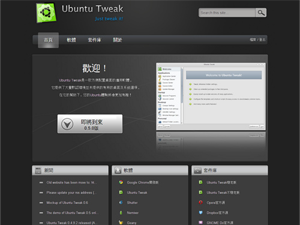

- 简介:
- 这是我为自己的博客设计的一款主题，是我当时学习CSS的练习作品，所以布局非常简洁，当初通过这个练习学到了不少的CSS布局知识。
- 工具:
- Photoshop, XHTML/CSS, jQuery, Wordpress
- 链接:
- http://www.imkeke.net
博客设计

- 简介:
- ubuntu tweak是一款Ubuntu操作系统下方便用户配置系统的工具，由TualatriX开发，该软件的官方网站最初由Kevin定型，后来由我负责了页面设计和前端开发工作，这是我真正接触的项目，受益匪浅。
- 工具:
- Photoshop, XHTML/CSS, jQuery
- 链接:
- http://ubuntu-tweak.com
UTCOM
- 简介:
- 毕业设计使用jsp作为后台语言，我负责了登录页面的设计和页面编写以及后台页面的整理。
- 工具:
- Photoshop, XHTML/CSS, jQuery, JSP
- 链接:
- NaN
毕业设计